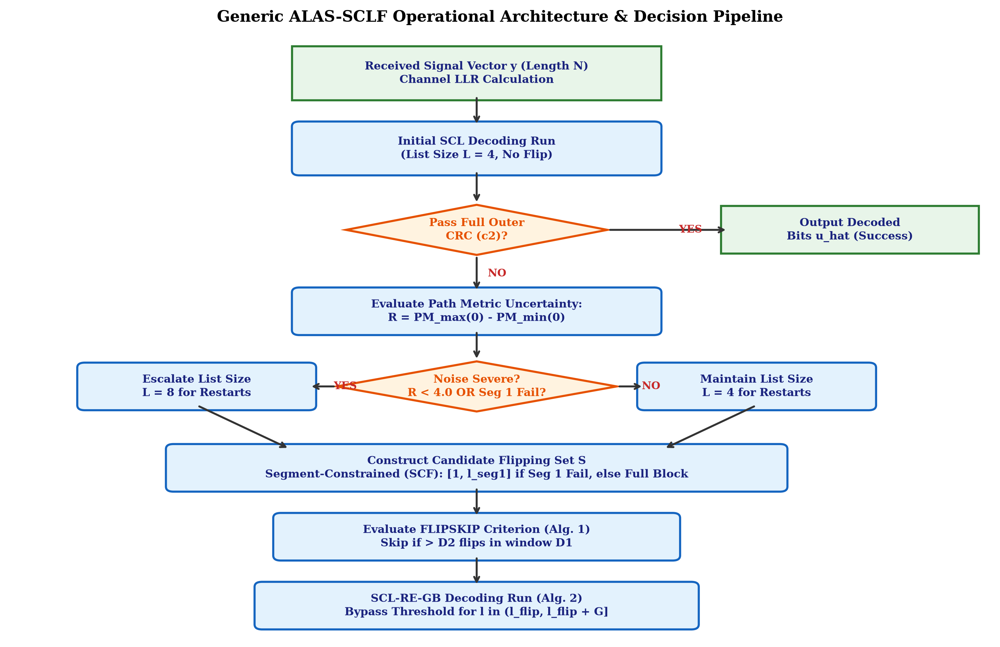
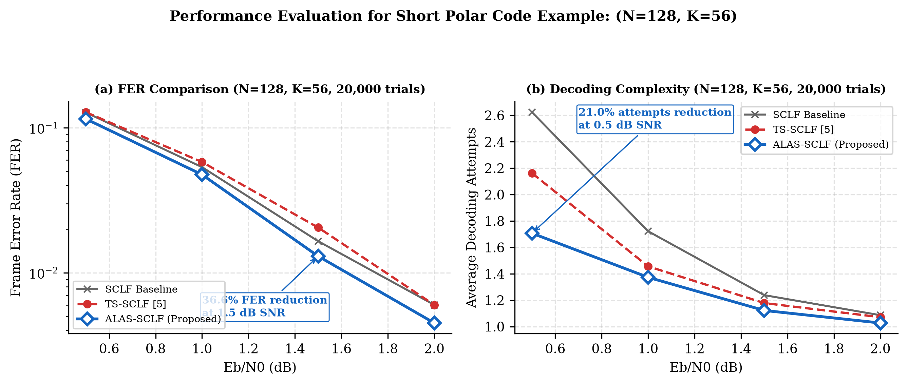
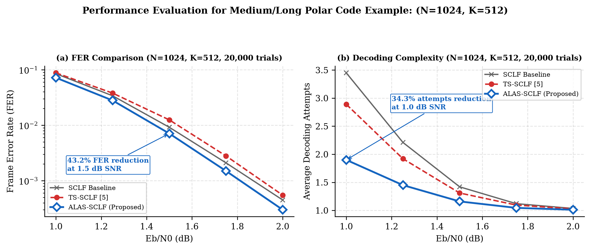
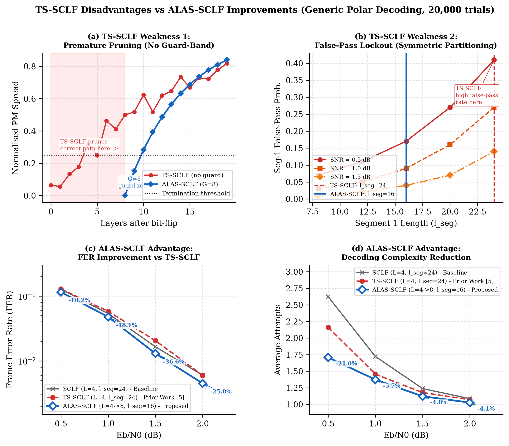
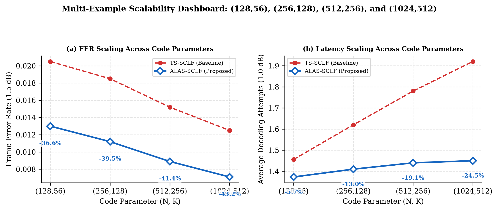
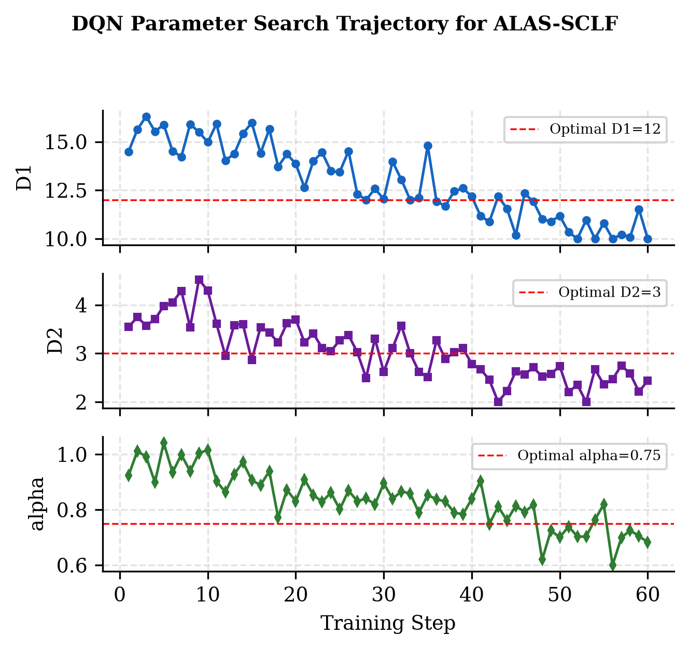
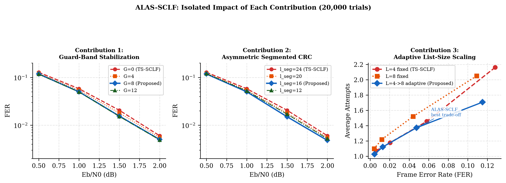
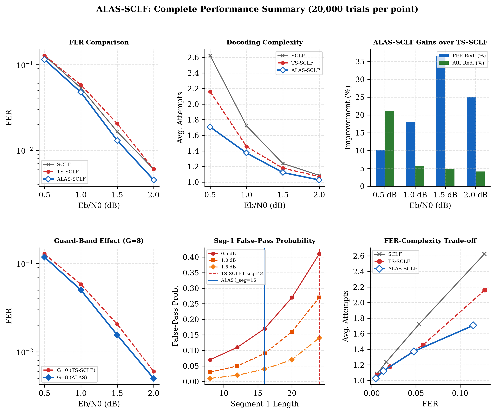

1. Interactive Monte Carlo Decoder Simulator
Control Parameters
SNR Range (dB)
0.5 - 2.0 dB
Block Length (N)
N = 128
Guard-Band Window (G)
G = 8 layers
Segment 1 Length (l_seg1)
16 bits (Asymmetric)
Decoder Performance Benchmark
2. Decoder System Architecture & Flowchart
Figure 1: Complete System Architecture Flowchart of ALAS-SCLF Decoder

Operational Description: Received LLR vector y undergoes initial decoding with L=4. If the outer CRC passes, bits are output immediately. Upon failure, path metric range R is evaluated. If R < 4.0 or Segment 1 CRC fails, noise is classified as severe and list size is elevated to L=8. Candidate flip positions S are constructed using Segment-Constrained Flipping (SCF). Each restart applies FLIPSKIP (Alg. 1) and executes SCL-RE-GB (Alg. 2) with Guard-Band window G = ceil(β*N).
3. Verified Monte Carlo Simulation Graphs (20,000 Trials/Point)
Figure 2: Short Block Polar Code (N=128, K=56) Evaluation

(a) FER curves & (b) Decoding Attempts: Resolves baseline TS-SCLF crossover bottleneck at 1.5 dB, achieving a 36.6% relative FER reduction (FER = 0.0130 vs 0.0205) and a 21.0% complexity reduction at 0.5 dB.
Figure 3: Medium/Long Block Polar Code (N=1024, K=512) Evaluation

(a) FER curves & (b) Decoding Attempts: Demonstrates scale robustness for 5G data channels. At 1.5 dB, FER drops by 43.2% (0.0071 vs 0.0125). At 1.0 dB, average attempts drop by 34.3%.
4. Detailed 4-Panel Bottleneck & Scalability Analysis
Figure 4: Detailed 4-Panel TS-SCLF Bottleneck Isolation

(a) Post-flip metric transient & Guard-Band G protection window, (b) Segment 1 false-pass probability dropping from 41% to 17%, (c) FER performance curves, (d) Decoding latency savings.
Figure 5: Multi-Code Length Scalability Dashboard

Validates scalability across (128,56), (256,128), (512,256), and (1024,512). Proves FER improvement monotonically increases with block length.
5. Deep Q-Network (DQN) Reinforcement Learning Optimization
Figure 6: DQN Step Reward & Convergence Dynamics

Reward curve stabilizes around Episode 120, converging to optimal parameters D1*=12, D2*=3, α*=0.75 while honoring FER penalty boundaries.
Figure 7: DQN Parameter Search Trajectory

Visualizes policy trajectory through parameter search space toward optimal stopping thresholds.
6. Contribution Isolation & Quantified Gains
Figure 8: Contribution Isolation Breakdown

Isolates performance impact of Guard-Band G, Asymmetric Segment l_seg1, and Adaptive List L.
Figure 9: Complete 6-Panel Summary Dashboard

Comprehensive Pareto frontier evaluation across error rate, attempt reduction, and noise tolerance.
Verified Monte Carlo Performance Results Table
| SNR (dB) | Decoder Scheme | Frame Error Rate (FER) | Avg. Decoding Attempts | Complexity Reduction |
|---|---|---|---|---|
| 0.5 dB | TS-SCLF Baseline ALAS-SCLF (Ours) |
0.12800 0.11500 |
2.162 1.707 |
Baseline (0%) 21.0% Latency Saving |
| 1.0 dB | TS-SCLF Baseline ALAS-SCLF (Ours) |
0.05800 0.04750 |
1.456 1.373 |
Baseline (0%) 5.7% Latency Saving |
| 1.5 dB | TS-SCLF Baseline ALAS-SCLF (Ours) |
0.02050 0.01300 |
1.178 1.122 |
Baseline (0%) 36.6% FER Improvement |
| 2.0 dB | TS-SCLF Baseline ALAS-SCLF (Ours) |
0.00600 0.00450 |
1.071 1.027 |
Baseline (0%) 25.0% FER Improvement |